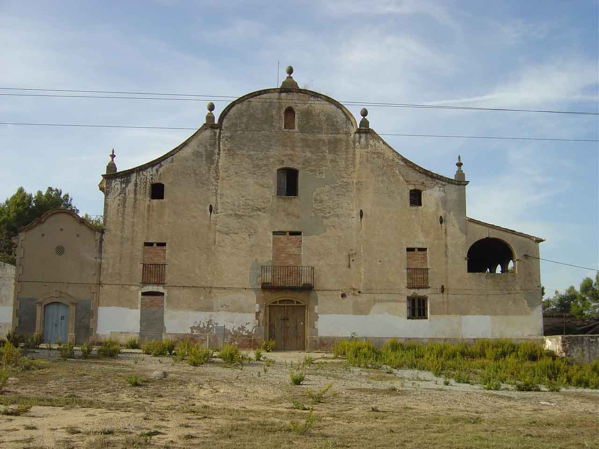

|
 |
|
Nom de l’element: Can Pedrerol de Dalt
Clau d’identificació: A.06
Nucli o indret: Pol. Ind. Santa Rita.
UTM: X= 415.985, Y= 4.590.353.
Règim del sòl: sòl urbà.
1.1. Època de construcció i tipologia:
Masia catalana del s. XIX (1800 aprox.) amb façana d’estil barroc. Els murs són d’aglomerats i mamposteria, la coberta té envigats de fusta i teula. Presenta una planta rectangular amb un cos principal, tres crugies i una coberta a dues aigües central i dos laterals a una aigua més deprimits. Té planta baixa, dues plantes pis i golfes. La façana principal està orientada a migdia i és simètrica amb obertures que van disminuint la seva dimensió a cada alçada, i un motllurat i un coronament circular de barroc català amb peces de terracota. Al costat est s’obre una galeria amb arcs rodons i a la banda oest hi ha una petita capella adossada dedicada a Santa Rita (1774). Té una sèrie de cossos annexes de magatzems addicionats lateralment al cos principal, la majoria en ruïnes. Al jardí posterior, hi ha un passeig en l’extrem final del qual hi havia hagut un pilar amb un lleó al capdamunt, el qual sostenia a la pota dreta l’escut del compte Dublayzel. La masia havia estat la seu social del P.I. Santa Rita.
1.2. Estat de conservació:
En general, es troba en ruïnes. Les estructures portants, els forjats, la façana i els acabats interiors es troben en un estat dolent. La coberta, el paviment i les obertures estan en ruïnes. Presenta humitats.
1.3. Ús actual:
Sense ús.
1.4. Accés:
Accés fàcil des del c/ Electricitat (Pol. Ind. Santa Rita).
Masia catalana del segle XIX, amb una façana d’estil barroc.
3.1. Usos admesos:
Oficines i serveis, educatiu, recreatiu cultural i social, restauració.
3.2. Condicions d’ordenació:
Segons Pla Especial a redactar.
3.3. Accés i serveis:
Accés des del c/ Electricitat (Pol. Ind. Santa Rita).
BCIL (Bé Cultural d’Interes Local)